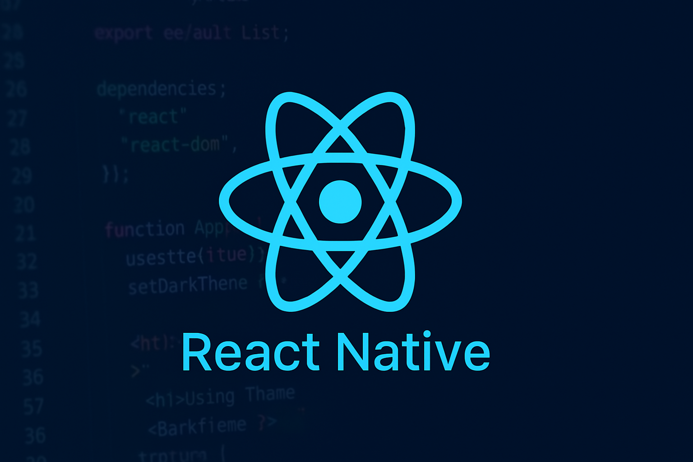

Explore Nossas Trilhas de Programação

Trilha Python para Dados
Domine bibliotecas como Pandas e NumPy para manipulação e análise de grandes volumes de dados.
Data Science Ver TrilhaTrilha JavaScript Essencial
Aprenda a criar interfaces dinâmicas e interativas para a web com JS puro e frameworks.
Front-end Ver TrilhaTrilha Java Backend Profissional
Desenvolva APIs robustas e escaláveis utilizando a linguagem Java e Spring Boot.
Back-end Ver Trilha

Trilha Mobile com React Native
Crie aplicativos nativos para iOS e Android com uma única base de código JavaScript.
Mobile Ver TrilhaTrilha Fundamentos de AWS
Introdução aos serviços essenciais da Amazon Web Services para deploy e infraestrutura.
DevOps Ver TrilhaTrilha SQL Essencial
Aprenda a manipular e consultar dados em bancos de dados relacionais com SQL.
Back-end Ver Trilha